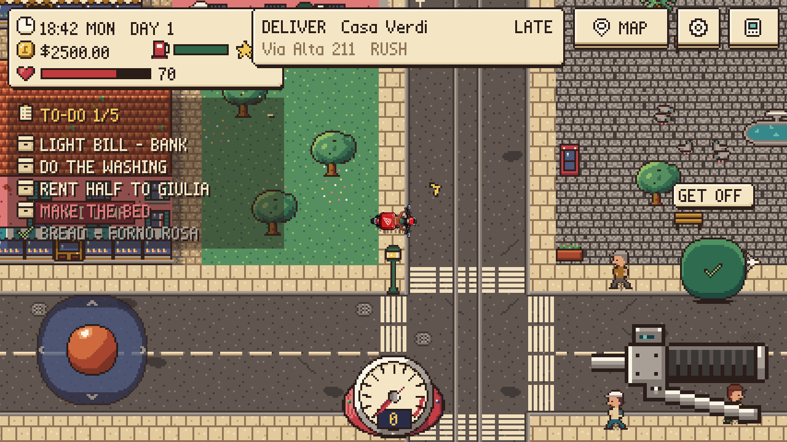
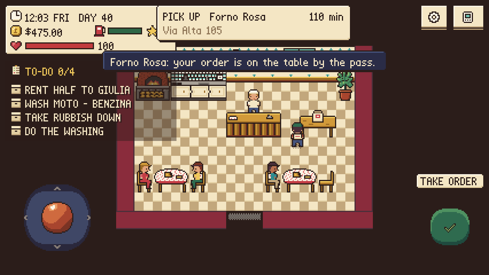
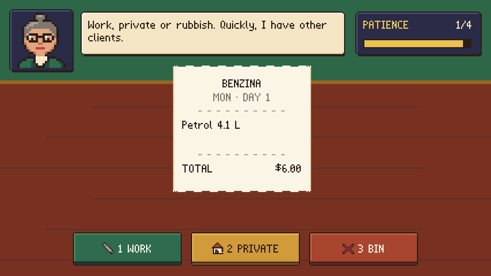
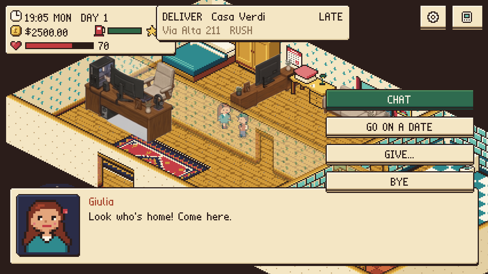
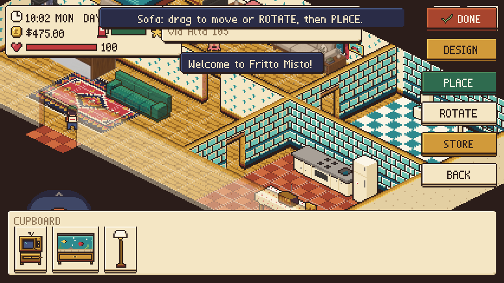
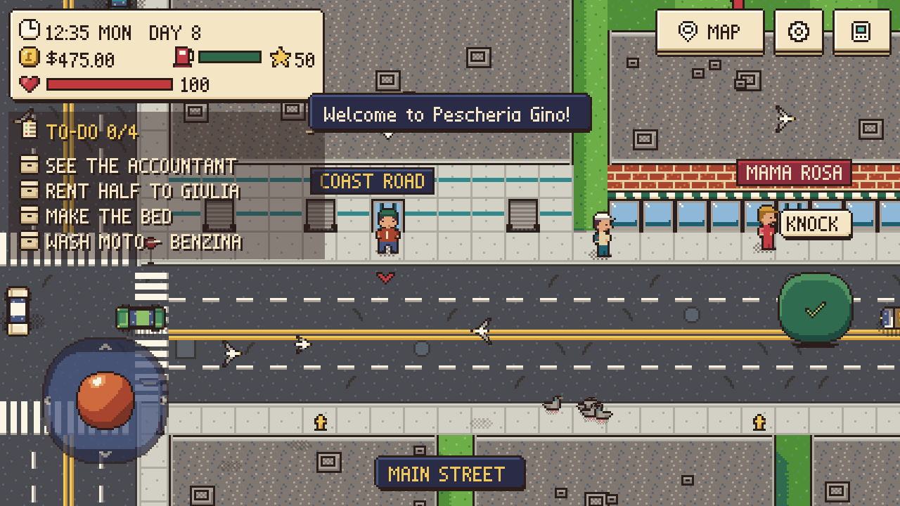

Retro Courier
Porto Lume, 1989. Hot food, cold receipts.

Ride a little delivery moto through a sunny harbour town. Pick up pizza, gelato and fried fish from 13 restaurants, get them to the door while they're still hot, and come home to a flat you furnished yourself. Every piece of art in the game is drawn by hand, pixel by pixel.

Orders on the pager
Orders arrive on your pager. Rush jobs pay more, late ones lose the tip. Walk into the restaurant, take the bag from the pass and race the clock across town. Keep an eye on the petrol gauge.

Keep every receipt
Petrol, repairs, groceries: every receipt goes in the shoebox. Once a week, Signora Ferri sorts them with you into work, private or rubbish, and you pay your tax. Sort them right and you keep more of your pay.

A life after work
Giulia lives with you. Spend your evenings together, take her to dinner, pay your share of the rent, and one day buy a ring. Neglect her and she'll pack her bags.

Make the flat yours
Buy sofas, lamps and rugs at Mobili Lucia, then drag, rotate and place them wherever you like. Pick wallpaper and floors room by room, and buy more rooms as you earn.

A second town
Keep delivering and the road to Ponte Ferro opens: a whole new suburb with its own restaurants and a house on Oak Lane, furnished with everything you already own.
Retro Courier
- Restaurants13+
- Motos to buy10+
- Towns2
- Art drawn by handAll
- Internet neededNo